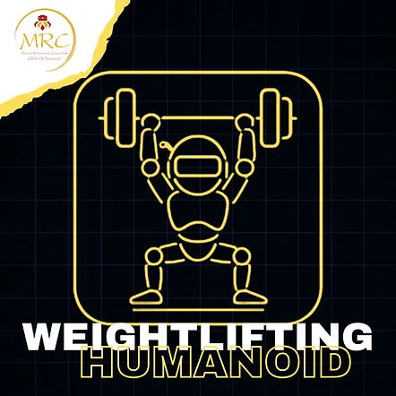
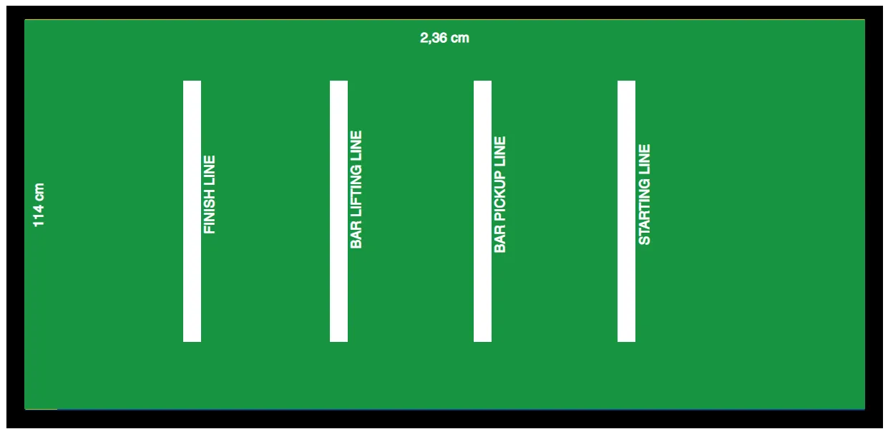
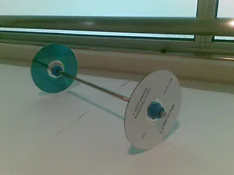

MRC WEIGHTLIFTING HUMANOID (人形機器人舉重)
🔗 前往希臘官方網頁查看最新原始英文規則 (Original Rules)MRC WEIGHTLIFTING HUMANOID (¤H§Î¾÷¾¹¤HÁ|«)
仿人舉重原始內容
規則內容
仿人舉重
年齡組別
青少年組 / 青年組 (14至18歲 / 國中及高中)
成人組 (18歲以上 / 大學生及個人)
⚠️ 本項目僅設一個級別：
所有類型的機器人同場競技。
🚨 兩個年齡組別合併比賽。
⚠️ 第零條規則 – 零容忍原則與常識
在所有運動項目中，均適用第零條規則，其內容如下：
➤「如果您不確定某件事是否被允許，那麼它很可能是不被允許的。」
所有規則皆基於常識、運動精神以及所有參與者的安全。
任何蓄意曲解、違反規則本意，或試圖利用灰色地帶獲取不公平優勢的行為，將不被容忍，並可能導致隊伍被取消比賽資格。
🎯 目標
- 舉重比賽的目標是鼓勵對主動平衡機器人以及能夠在重負載下行走並能夠補償不同重心的機器人的研究。
- 本項目的目標是使用能夠舉起負載並將其移動指定距離的機器人來複製舉重運動。
👥 隊伍 – 教練
- 比賽以隊伍為單位參與，而非個人。
- 每隊可由二 (2) 至三 (3) 名隊員組成。
- 每隊必須指定最多一 (1) 名機器人運動員技師。僅允許機器人運動員技師進入準備區或比賽區域。其餘隊員必須留在比賽場地內，但不得排隊等候。➤ 換言之，他們不能佔用額外位置。若隊伍未遵守此規則，將被取消資格。
- 允許隊伍在每次賽道嘗試前更換指定的技師，讓所有隊員都有機會積極參與該項目，但此非強制性。
- 所有隊員必須年滿 10 歲 (相當於國小四年級或以上)。
- 隊伍教練必須年滿 20 歲。
- 為確保比賽順利進行，教練每註冊 3 支隊伍參加比賽，就必須配備 1 名助理。
- 每隊僅允許使用一台機器人。比賽期間不得更換機器人。
- 隊伍之間不得共用同一台機器人。
- 若隊伍的機器人遇到嚴重的技術問題，經主裁判許可後，僅允許更換微控制器或電子元件。
⚙️ 機器人運動員要求 – 規格
- 本競賽開放給仿人機器人運動員，無論使用何種硬體。
一般機器人規格
1. 機器人必須是雙足行走的仿人機器人，且在行走時必須轉移重心以保持平衡。
2. 行走時，一隻腳應離開地面，而另一隻腳平衡機器人。
3. 行走時，機器人用於平衡的那條腿的膝關節角度必須大於 90 度。在任何時候，若非如此，則該機器人將不被視為在行走。
4. 只要滿足以下所有條件，腳部可以有任何形狀和形式：
a. 機器人腳部定義為機器人與競賽場地表面（地面）接觸的部分。
b. 腳部的最大長度（尺寸）必須小於機器人伸展腿長度的 50%。腿長定義為機器人腳部接觸地面點與腿部連接機器人上軀幹之軸心之間的距離。
c. 腳部最大長度必須小於 20 公分。
5. 當機器人站立或行走時，左右腳周圍的矩形邊框不得重疊。
6. 機器人必須有 2 隻手臂。每隻伸展手臂的長度不得超過伸展腿的長度。
7. 機器人必須有一個頭部。
8. 機器人的高度必須大於 30 公分但小於 80 公分。
9. 機器人必須配備啟動按鈕。
10. 不允許使用干擾裝置，例如旨在飽和對手紅外線感測器的紅外線 LED。
11. 機器人必須在比賽開始前保持靜止 5 秒鐘。5 秒後機器人方可移動。
12. 機器人可透過遙控器或機器人上的按鈕啟動。
13. 在本項目中，不允許使用遙控器操作機器人。機器人應以完全自主的方式執行任務。
🧪 技術檢查
- 初次技術檢查於比賽當日，在第一次嘗試時進行。
- 在初次檢查期間，將詢問隊伍關於槍枝程式的關鍵部分。➤ 隊伍必須打開裝有機器人程式的筆記型電腦。➤ 若從回答中明顯看出隊伍不理解程式，他們將受到相當於其在該項目中所得分數 -20% 的罰則。
- 技術檢查包括根據上述規格進行的槍枝檢查。➤ 若槍枝未達要求，將不允許其參賽，並自動取消其在该項目的資格。
- 初次檢查完成後，槍枝將被分配一個唯一的 ID 編碼。
- 若隊伍在初次技術檢查時未到場，將導致自動取消比賽資格。
- 在每次嘗試前，助理裁判也會進行二次技術檢查。
- 槍枝技師必須佩戴安全眼鏡。防護裝備在比賽場地上，賽前和賽中皆為強制性。防護裝備將在技術檢查期間進行檢查。
- 缺乏全部或部分防護裝備將成為隊伍被取消該項目資格的理由。
🏟️ 場地
- 競賽場地為矩形。其表面為 2.36 公尺 x 1.14 公尺，顏色為綠色。
- 其材質為可印刷帆布。
- 綠色表面定義為比賽表面，周圍環繞黑色邊界線。
- 放置競賽場地的賽道為矩形，由 5 公釐厚的木材製成。
- 賽道放置在地板上。
- 白線寬度為 5 公分（50 公釐）。
- 所有給定尺寸允許有 5% 的公差。
- 在比賽開始前，將有時間讓機器人運動員進行測試，其技師可依比賽當日公布之時間表進行測試。

➤ 舉重桿和槓片
- 舉重桿是木質、金屬或塑膠桿，寬度為 8 公釐至 15 公釐。使用兩個擋塊來放置槓片。內部擋塊之間的距離至少為 40 公分。舉重桿的總長度在 50 公分至 80 公分之間。
- 比賽中使用的「槓片」通常是 1/4 英寸的 CD 或 DVD，由機器人運動員舉起。
- 槓片支撐在擋塊上，使其不會在賽道上滾動。擋塊高度為 10 公分。


舉重桿擋塊
🏆 比賽
⏱️ 準備
1. 單一機器人運動員參加一場比賽。
2. 所有其他機器人運動員必須排隊等候。
3. 機器人運動員將被放置在起跑線後方。
4. 在每次嘗試開始時，機器人運動員的技師將告知裁判他們希望其運動員嘗試舉起多少片 CD，裁判將把所需的重量掛在舉重桿上。
5. 機器人運動員每次成功嘗試後，CD 的數量必須增加。機器人運動員技師可在每次嘗試前向裁判指定他希望增加多少片額外的 CD。
6. CD 的增加是在舉重桿兩側同時進行的，例如，若技師選擇增加 3 片額外的 CD，則裁判將在舉重桿兩側各增加 3 片 CD，即增加 6 片 CD 的重量。
🏁 開始 – 比賽流程
- 技師將機器人運動員放置在起跑線上，使其腳尖直接位於白線後方，手臂垂直，平行於身體。
- 裁判將發出比賽開始的信號。
- 機器人運動員的技師必須按下啟動按鈕，機器人運動員才能運作。
- 機器人運動員應在 5 秒後開始移動。
- 機器人運動員應移動到舉重桿的接收線，並將其從擋塊上拾起。舉重桿的抬起高度不得超過機器人運動員的腰部高度。
- 機器人運動員必須持續攜帶重量走向舉重線，直到一隻腳觸及舉重線。在行進過程中，舉重桿的抬起高度不得改變。
- 當至少一條腿接觸到舉重線時，機器人運動員必須將舉重桿舉過頭頂。
- 在將舉重桿保持過頭頂的同時，機器人運動員必須繼續走向終點線。若機器人運動員雙腳越過終點線，且重量保持在頭頂上方，則該次舉重視為成功。舉重桿應僅由機器人運動員的雙手支撐。
- 越過終點線後，機器人運動員必須自行將舉重桿放下至競賽場地表面。
🔁 回合 – 嘗試 - 比賽程序
- 比賽時間為 2 小時。
- 在此期間，每位技師將根據組委會公布的順序，在賽道上進行多次嘗試。
- 若技師未在排隊中，則該次嘗試視為放棄，由下一位技師遞補。錯過嘗試的技師必須等到所有其他嘗試完成後，才能再次輪到。
- 裁判記錄每次嘗試的分數。
- 機器人運動員在每次嘗試前將通過助理裁判的技術檢查。
- 僅允許重新啟動一次。
- 隊伍可在每次嘗試前更換指定的技師（可選，以讓更多隊員參與）。
- 隊伍在所有嘗試中取得的最高分數計為該隊的官方分數，並決定獲勝者（最佳嘗試計分）。
❌ 回合結束 - 嘗試
嘗試結束由裁判信號指示。
若發生以下情況，裁判結束比賽：
- 機器人成功越過終點線並放下舉重桿。
- 機器人無法在 2 分鐘內完成嘗試。
- 機器人摔倒且無法自行站起，或因技術故障停止移動。
- 機器人完全越過起跑線或由起跑線和終點線形成的矩形的隱含側線，離開比賽區域。
📊 計分
在比賽時間結束時：
- 所有未成功舉起至少 1 片 CD 的機器人自動不列入排名，得分為 0。
- 機器人運動員每舉起一片 CD 將獲得 1 分。
- 機器人運動員根據其最佳嘗試中獲得的最大分數，排名為第一名、第二名、第三名。
- 若在舉重項目中所有嘗試結束後，兩台或以上機器人分數相同，則將使用先前最大重量的總和作為平手判定標準。
- 若兩台或以上機器人分數相同，且在應用前一個平手判定標準後仍平手，則將僅使用第 1 回合的最大重量作為平手判定標準。
- 若兩台或以上機器人分數相同，且在應用前一個平手判定標準後仍平手，則將僅使用第 2 回合的最大重量作為平手判定標準，依此類推。
🔄 在以下情況下，比賽將被放棄並重新開始：
- 若機器人未啟動，僅允許重新啟動一次，且僅限於第一次嘗試。
- 若重新啟動時機器人仍未啟動，則由下一台機器人運動員繼續。
🛠️ 維修、修改、意外中斷
- 若機器人在比賽中故障，裁判將給予 1 分鐘的維修時間。主辦單位可將此時間延長至 15 分鐘。維修將在助理裁判的監督下進行，以避免更換機器人運動員。若機器人運動員無法在指定時間內修復，則取消其比賽資格。
- 禁止在維修期間對機器人進行任何修改。
⚠️ 安全違規
- 參賽隊伍始終對其自身安全及其機器人的安全負責，並對其隊員或其機器人造成的任何事故承擔責任。主辦單位和組委會成員絕不對參賽隊伍或其設備造成的任何事件和/或事故負責或承擔責任。
🟥 隊伍取消資格
在以下情況下，隊伍將被取消比賽資格並必須退出：➤ 隊伍的成績將不予計算，也不會出現在官方比賽排名中。
- 若機器人運動員不符合運動規則中定義的規格，且隊伍拒絕進行必要的調整。
- 若任何技師行為不當或不尊重他人，使用侮辱性語言、挑釁，或對其他參與者或裁判進行口頭（或其他方式）攻擊。
- 若發現機器人運動員並非自主運作，而是透過藍牙、Wi-Fi 或任何類似技術進行遠端控制。
✅ 允許 / ❌ 禁止
✅ 允許：
- 在嘗試之間（比賽場地外）進行重新編程和機械調整。
- 為安全起見的防護罩/護板和圓角邊緣。
- 用於舉重的齒輪、皮帶輪、皮帶、鏈條、蝸桿傳動裝置、變速箱及類似機構 — 前提是它們安全固定且不損壞場地。
- 狀態指示器（LED、蜂鳴器）和可聽到的嗶聲信號。
- 在嘗試之間使用製造商推薦的電池進行更換。
❌ 禁止：
- 除啟動機器人外，機器人運動員在嘗試期間不得以任何方式連接到電腦、平板電腦或任何其他電子設備。
- 為安全起見，禁止對馬達、微處理器或電池進行任何修改。
- 不允許使用可能破壞或損壞比賽場地的組件。不得使用旨在傷害其他機器人、觀眾、裁判的組件。
- 不允許使用黏性物質來增加附著力。
- 不允許使用可儲存液體、灰塵、氣體或其他物質的裝置。
- 不允許任何類型的可燃裝置。
- 不允許使用投擲裝置。
🏆 獲勝者
3 名獲勝者是得分最高的隊伍。
最佳分數用於決定以下名次：
🥇 第一名 🥈 第二名 🥉 第三名